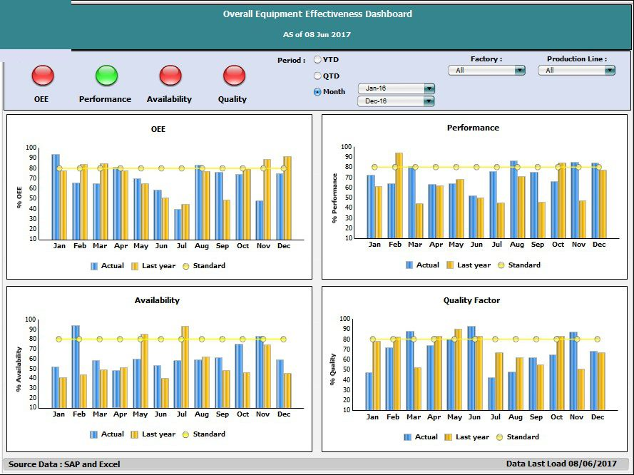
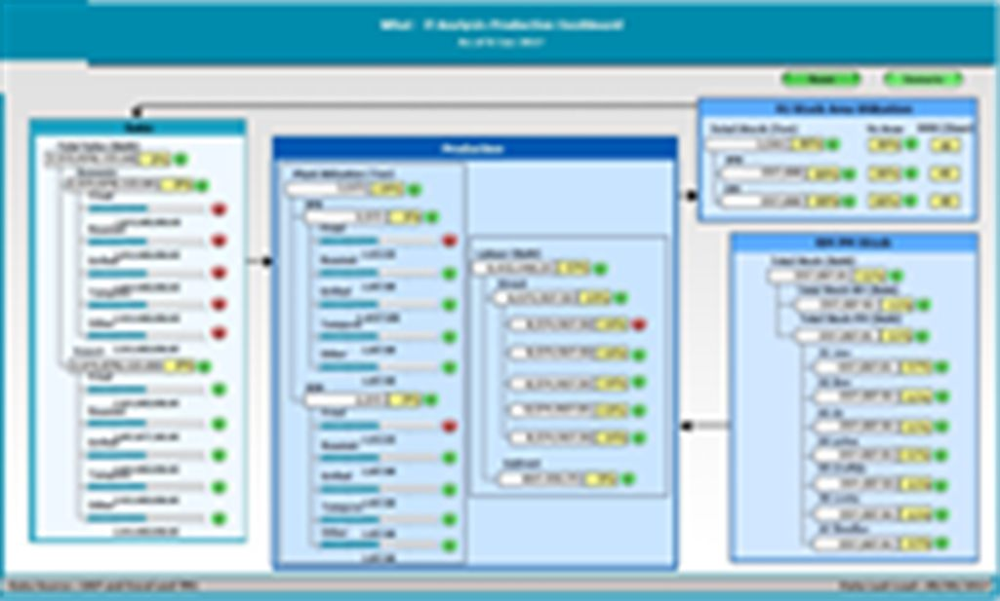

Retour aux projets
BI supply chain pour un industriel
34 tableaux de bord et rapports pour piloter les achats, les stocks, la production et la qualité d'un fabricant thaïlandais de snacks. 2017.
Le projet
0
tableaux de bord et rapports
0
domaines de la supply chain
0
conçus par moi
Mission de 4Plus Consulting, en équipe de trois. Les rapports s'adressent au directeur des opérations et aux responsables achats, entrepôts, planification, production et qualité de deux usines.
Rapports par domaine
Fabrication
8
Planification
7
Vue d'ensemble
6
Stocks
4
Qualité
4
Achats
2
Distribution
2
Fournisseurs
1
11 tableaux de bord pour la direction, 23 rapports détaillés pour les équipes.
Vue d'ensemble
Achats, production et stocks du mois contre l'année précédente et le budget ; coût supply chain en % des ventes ; coût de production par nature (matières, main-d'œuvre, frais généraux)
Achats
Achats par fournisseur, local et import ; écart entre prix d'achat et prix standard (PPV) ; niveau de service fournisseur : prix, délai, qualité
Distribution
Coût de transport par carton et en % des ventes, export et marché local
Stocks
Entrées, sorties, stock et ancienneté des produits finis, emballages et matières premières ; classes rotation rapide, normale, lente, stock mort
Planification
Budget contre commandes ; couverture en jours des produits finis (prévision contre stock) ; capacité contre réel ; plan de production quotidien
Fabrication
Efficacité des équipements (OEE), arrêts machines, pertes en process, productivité en paquets par heure-homme
Qualité
Réclamations clients, contrôles qualité, non-conformités (ER/NCR), défauts matières contre volumes achetés
Exemple : l'efficacité des équipements

- OEE = disponibilité × performance × qualité. Un voyant par composante indique tout de suite laquelle tire le résultat vers le bas.
Simulation : de la matière à la vente
Matières
Stock de matières et d'emballages
Production
Tonnage par usine, main-d'œuvre
Produits finis
Surface d'entrepôt, jours de stock
Ventes
Local et export, par famille

Données issues de SAP, de fichiers Excel et d'IBM TM1.
De la maquette à la validation
0
maquettes conçues mi-juin
0
demandes de correction après présentation
0
rapports fusionnés dans d'autres
- Chaque rapport part d'un entretien avec son utilisateur (avril 2017) et de l'ancien fichier qu'il utilisait, puis passe par une maquette présentée et corrigée.
- Les retours ont surtout demandé des comparaisons : réel contre année précédente et budget (initial ou révisé), avec des périodes en cumul annuel, trimestriel et mensuel.
- Moins de rapports, plus complets : le coût de livraison a rejoint le rapport de coût supply chain, et la capacité contre réel le tableau de bord des volumes.
- Une charte commune à tous les rapports : même barre de filtres, mêmes formats (millions de bahts à une décimale, pourcentages) et mêmes couleurs.
Client anonymisé : nom, logo, interlocuteurs et fournisseurs retirés. Les images sont des maquettes de juin 2017.